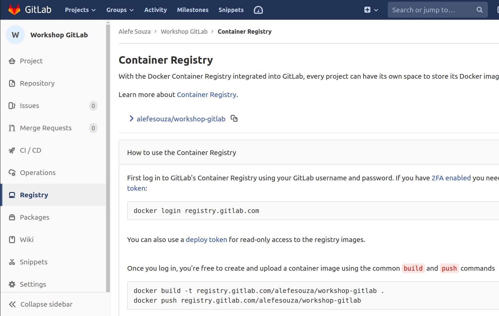

Docker: GitLab Container Registry
Geralmente enviamos nossas imagens Docker para o Docker Hub, basta você criar um conta no mesmo e começar a enviar suas imagens, porém ele possui um limite de imagens privadas no plano gratuito, uma boa alternativa para isso é utilizar o GitLab Container Registry, um Docker Registry igual o Docker Hub porém integrado ao GitLab e ao seu repositório, dessa forma você pode atingir outro nível de organização colocando sua infraestrutura junto com seu projeto, podendo também utilizar sua própria imagem Docker privada no GitLab CI, para começarmos, crie um arquivo chamado Dockerfile na raiz do seu projeto e coloque o código a seguir:
FROM node:10.15.1-jessie
RUN npm install -g jest
Esse é o exemplo mais simples de um Dockerfile, você pode ter mais informações de como criar um mais complexo clicando aqui.
Nesse código dizemos que estamos criando uma nova imagem Docker a parte do imagem do Node.js versão 10.15.1 rodando no Debian Jessie, e em seguida instalamos o jest globalmente para não precisarmos utilizar o npm install na hora de testar nosso código, note que você pode executar qualquer comando em bash ali que o sistema operacional na qual sua imagem se baseia, como ele é baseado em um Debian, você também pode usar o apt-get normalmente com algumas poucas excessões, vale lembrar que o Docker também "roda meio que em um sandbox" (sugiro pesquisar melhor sobre isso), dessa forma TODOS os comandos por padrão já são executados como se tivessem um sudo antes.
Caso já tenha conseguido instalar o Docker na sua máquina, rode o comando a seguir e faça login com suas credenciais do GitLab:
docker login registry.gitlab.com
Em seguida, rode o seguinte comando para "buildar" e enviar sua imagem Docker ao GitLab:
docker build -t registry.gitlab.com/{seu-username}/{seu-repositorio} .
docker push registry.gitlab.com/{seu-username}/{seu-repositorio}

Após isso, podemos enviar alterar nosso .gitlab-ci.yml para o código a seguir, já utilizando nossa imagem Docker:
image: registry.gitlab.com/{seu-username}/{seu-repositorio}
unit_test:
script:
- jest
Note que não precisamos rodar o npm install para rodar o jest, pois ele já está instalado globalmente na nossa imagem Docker logo tudo roda normalmente.